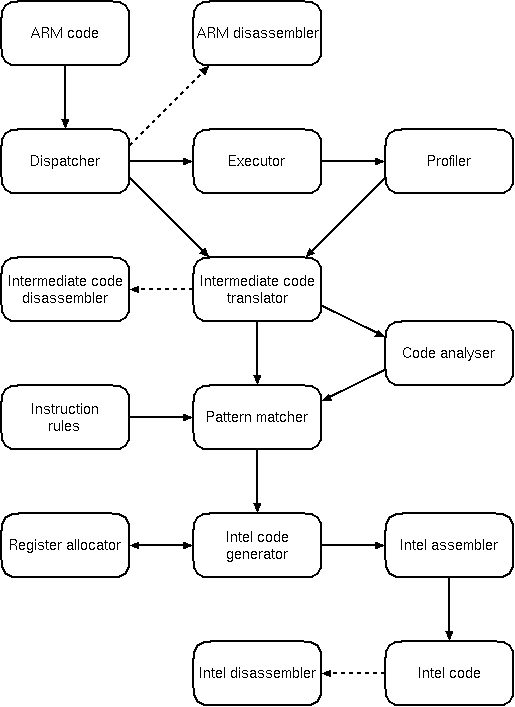
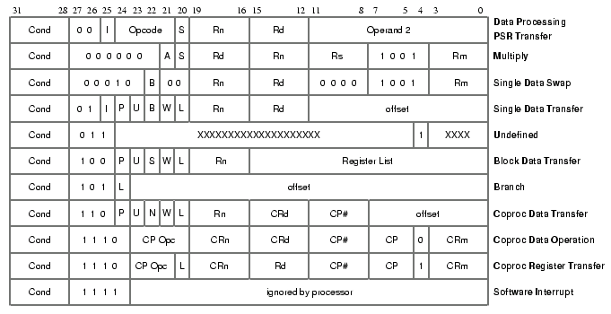
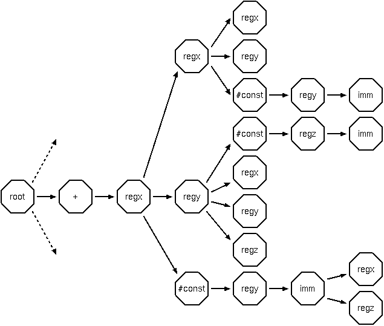

The program I have written for my Computer Science Part II project contains a substantial portion of the functionality required to emulate an ARM-based machine on an Intel x86 system running the Linux operating system. Rather than emulating in a traditional interpretive way (which is very slow), I am using a technique called dynamic recompilation (or binary code translation), as used in programs such as Executor, Virtual PC and UltraHLE. My aim is to run user-mode-only code in a flat, unprotected memory space with a high degree of accuracy and speed. This text forms a description of some of the code, intended for any potentially interested people and as a starting point for my dissertation.
Given that our aim is to translate code from one instruction-set architecture (ISA) to another, there are probably two approaches we could take. The first would be to convert an entire program at once, which seems like a fairly sensible idea. As I see it though, there is a simple, fundamental problem if we want to be able to emulate any program: given an arbitrary chunk of code, there is no simple way of telling what is code and what is data (and attempting to interpret data as code would be a bad thing to do). You might think (if you knew an assembly language) that simply starting at the entry point of your code and following all the branch instructions recursively would get you to all the executable bits. The problem with this comes when you consider calculated jumps. For instance, the C switch statement is often compiled (on the ARM processor) to something like:
add pc,pc,r0,lsl #2 mov r0,r0 b zero_code b one_code b two_code ...
That is, it's possible to modify the program counter (pc) arbitrarily, as the result of virtually any operation. Now, it may be possible to work out a set of heuristics to recognize common code sequences such as this, but they will not form a solid algorithm which will work in the general case.
Another example: consider the contrived (but not unlikely) code sequence:
cmp r0,#5 ble lessthan bgt greaterthan .word some_data ...
Any algorithm walking over this code to try and find the executable bits would need to know that the two conditions were mutually exclusive, and that the data word should never be run. This is unlikely to be impossible, but in the general case would be very hard.
The alternative approach, which I've taken, is to use a traditional emulator to run the code and discover which code is executable empirically. After code is executed a certain number of times, it is translated into native code ('recompiled') and stored somewhere, and henceforth can be executed much faster. This is similar to what a Java JIT compiler does of course, but I hate the term, so I'm not calling it that.
The project is written in C, naturally.
There are many differences between the ARM and Intel processor architecture (IA). Some of these don't really matter, others cause significant headache. A quick, non-exhaustive list of similarities and differences:
The task of converting directly from IA code to ARM code is considered too difficult. Instead, an intermediate representation is used, which breaks ARM code instructions down into very simple components. Hopefully, this format retains all the semantics of the original code. Once this code is generated, the remainder of the project is remarkably similar to a traditional compiler backend. Some things are more difficult however:
Some things are obviously easier:
The idea is that ARM code runs in some sort of virtual machine. At the moment, this isn't very far abstracted from the real machine, but will probably get further away as the emulator progresses, if you see what I mean.
A block of memory is allocated, and a test binary is loaded at some location within it. The program counter is set to the start of the binary, and instructions are executed one by one.
As each instruction is executed, the current program-counter location is fed to a profiler. This maintains a table of contiguous chunks of code, hashed by the start of each, and a pointer to a 'current' block. If the program counter is within the current block, no action is taken (other than to increment a use counter). If the program counter is one word beyond the block, the block is extended by that amount. If the program counter is anything else, firstly a check is made to see if there is a block which starts there. If so, that block is made the current block (and its use count is incremented). If not, a new block is created. Note that each block must now consist entirely of code.
If a block has been executed more than a certain number of times, it is converted to intermediate code, and henceforth to native code. This code is then executed whenever the program counter is at the location of the start of that block. It's impossible to jump into the middle of a block - this is an important feature, because to be able to do that would make things much more difficult and memory-hungry (think about register allocation and the state at an arbitrary point in a block).
This chunk of code is to the recompiler what an entire program (or perhaps function) is to a traditional compiler. This is the unit is split into basic blocks (more later), allocated registers, etc. At the start and end of each such block, all ARM registers must be stored in known memory locations.
In recompiled code, it is necessary for the state of the virtual processor to be visible. This is achieved by using a single register (EBP for those familiar with the IA) as a base pointer to access a block of memory containing register values, the state of processor flags, the current processor mode, information about the virtual machine's memory, and anything else necessary.
ARM registers are 'lazily' allocated to IA registers - if possible, memory locations indexed from EBP are often used directly in instructions generated to conserve the scarce IA registers. Flags are cached lazily in the IA EFLAGS register, only storing them to memory when an IA instruction is generated which would overwrite their values, in a case where the equivalent ARM instruction does not.
The project as it stands is structured something like this:

Dotted lines indicate stuff for debugging purposes. I may repeat myself in what I say below and still omit all the important details, forgive me if I do.
ARM instructions need to be decoded at various points of the program (disassembler, executor, intermediate-code generator). The dispatcher serves to determine which function, from one of several tables, should be used to deal with a particular instruction.

The best way I could find of doing this was a switch on bits 24-27 of the instruction, then particular tests to resolve ambiguities (such as between multiplications and some data processing instructions). Instructions are grouped roughly as the labels on the right of the diagram.
This is a fairly complete, if messy, ARM disassembler. It just decodes and prints out a given ARM instruction. Uses the dispatcher mentioned above.
Executes individual ARM instructions. There is nothing particularly special about this, it is just a traditional-style processor emulator. It is now accurate enough to run ARM BBC BASIC, with system calls trapped and 'faked' by the emulator.
The profiler is fed with program-counter locations, and builds information in a hash table about groups of instructions. When a particular block of code has been executed more than a certain number of times, the recompiler (consisting of the intermediate code translator, code analyser, pattern matcher, etc.) is invoked.
Now things start getting interesting. This part of the code translates ARM code into a self-invented intermediate code, of similar form to the "three-address code" used by a traditional compiler. The reason for using an intermediate code, rather than attempting to translate code directly from ARM to Intel, is that despite being RISC, some ARM instructions are actually quite complicated and perform several operations in one go. The intermediate code is much simpler, and separates out ARM instructions into very basic primitives. It is also very uniform in structure, so it's easier to analyse than raw ARM code.
The intermediate-code instructions are composed of an opcode, a destination register, three source registers, a side-effect field and an optional 32-bit immediate value. The registers in these instructions are a superset of those available on the ARM - the number concurrently accessable has been doubled to 32. This allows condition code flags to be referred to individually (which is sometimes useful), and also includes several temporary registers which are needed due to the splitting of instructions.
Opcodes currently in use are:
All shift, logical, arithmetic, comparison and data movement instructions may have only registers as arguments. The side-effect field describes which condition flags (zero, negative, overflow, carry) should be affected by each intermediate instruction.
It is fairly straightforward to convert ARM code into this type of intermediate representation. No attempt at optimisation is made at this point.
As a simple example, the ARM instruction:
add r0,r1,#5
Might be converted to:
t0 <- #5 (load constant into temporary register 0) r0 <- r1 + t0 (add r1 to t0, put result in r0)
Note that all ARM instructions are conditional, but the only conditional instructions in the intermediate code are branches. Conditional instructions are simulated using branches.
There are four types of flow control which can occur:
The first case will be the most efficient - a simple (conditional) branch instruction can be generated. The translation is done using one pass over the code, and forward references are dealt with using a technique called backpatching. The second case generates an unconditional "xjmp" to the start of the destination block - control can be transferred directly without returning to the interpreter. The third case sets the program counter register and a "setpc" instruction. The fourth case just generates a "setpc" instruction (after the program counter has been set, as the destination register, by whatever calculation was done). This means that recompiled code will never run completely independently of the interpreter and profiler for very long.
There are two different things done by the code analyser. The first is to determine so-called "basic blocks" from a group of instructions (a basic block is a section of straight-line code containing nothing that can modify the flow of execution). The second is data-flow analysis within those basic blocks (which is actually done concurrently). Free-variable analysis is not done, nor is peephole optimisation, although both could be added without upsetting anything too badly. Free-variable analysis is probably less important than for a normal compiler anyway. Copy and branch propagation may be beneficial in some circumstances though.
The data-flow analysis involves building up next-used and last-set information, where relevant, for each argument of each instruction in each basic block. This is important for the pattern matcher.
In an abstract sense, the code generator works by ad hoc tree matching. IA instructions (or small groups of IA instructions) are associated with tree fragments. The algorithm used tries to match the largest number of intermediate code instructions possible to a single instruction pattern ("rule").
Rules are held in a single structure, an n-ary tree. Each node is actually a hash table, and each branch can be one of:
The regn are placeholders which stand for any register. Multiple instances of, say, regx in an instruction must stand for the same register, and different registers must have different n.
Patterns have the form <operator> <dest> <arg1> <arg2> <arg3> ... <code generator>
An example: the intermediate code instruction
r0 <- r1 + r0
would be matched by a rule like:
ADD REGX REGY REGX CODEGEN
As a rule is matched, the mappings REGX=r0 and REGY=r1 are stored.
The complications start to come when more than one intermediate code operation forms a single rule. Say, because an Intel instruction can add an immediate to a register directly without the need to move the immediate into a register first, it is desirable to condense instruction sequences like:
t0 <- #5 r0 <- r0 + t0
into a single Intel instruction,
addl $5,%eax
The rule to match this might look like:
ADD REGX REGX CONST REGY IMM CODEGEN
That is, the first intermediate code instruction is embedded within the rule for the second. This seems like a pretty powerful mechanism, especially as there's no need for the instructions to be consecutive. At the moment, the rules present refer to at most two instructions, but more could be added easily. There are certain situations this could prove to be a neat solution - consider the IA lea instruction, which could sometimes be used to translate ARM instruction of the form add rx,ry,rz,asl #n extremely efficiently. So, with this mechanism, a sort of simple peephole optimisation can be done without any additional passes over the intermediate code.
A complete section of tree for one intermediate opcode is shown below:

A cutting from the rule tree. Instruction matching starts at the root node, then matches an operator, then follows the appropriate path. Code generator nodes omitted.
This is how it works, using the data flow information gathered in the analysis section above: When the second instruction is reached (the first instruction will already have matched successfully), it is matched as usual. For any argument registers which have valid last-set information, the instruction which that register was last set by is matched recursively. There are situations when assimilating an earlier instruction would be a bad thing to do (eg, in the example above, if the value of t0 was used again), and in these cases the rule assimilation is not done, and the matcher falls back to using two seperate rules. In other cases, a single rule can be assimilated successfully by more than one instruction (it's vital that nested rules don't have any side effects!).
When the pattern matcher has finished, some intermediate instructions will have rules, some will not. These rules (currently numbering around 120) actually contain pointers to functions which generate Intel code directly. Before they are called, the intermediate-code registers must have Intel registers assigned to them. There are 32 of the former and only 8 of the latter, and once the stack pointer (ESP) has been factored out (it's not really useful to us) and a register-block base register has been chosen (EBP), there are only 6 left. Clearly some sort of register allocation strategy is needed: the one used is pretty simplistic. The destination registers of instructions are always assigned to actual IA registers. Source registers are kept in memory unless specific instructions require them to be in IA registers, or they are already in IA registers as a result of previous instructions. When no IA registers are left, one is chosen (cyclically at the moment) to be stored back in the memory-based register dump, and is recycled. This doesn't actually seem to happen all that often.
As mentioned before, the status flags (zero, negative, overflow, carry) of the emulated ARM are calculated using the IA's native logic, where possible. When flag values are not destroyed (ie, they don't diverge between the two types of code), this means that, say, a comparison followed directly by a conditional branch will work as expected, in an efficient manner. Other times, flags need to be stored in memory between calculation and use - the IA makes it very easy to store a flag in a byte-wide memory location, so this is what's done. Unfortunately, it's not nearly so easy to get those flag values back into the flag register when they're needed - the way it's done at the moment is ugly and verbose, but was the best I could think of (never having seriously programmed in IA assembler before now...).
There are technicalities when dealing with the program counter as an operand when in the 26-bit addressing mode, but they're too traumatic for me to go into right now.
The program generates binary code directly (although it only knows about a subset of Intel instructions). The way it does this is mostly through the use of preprocessor macros, and is quite ugly and horrible. The less said about it the better.
This just execs objdump, which is nice and easy...